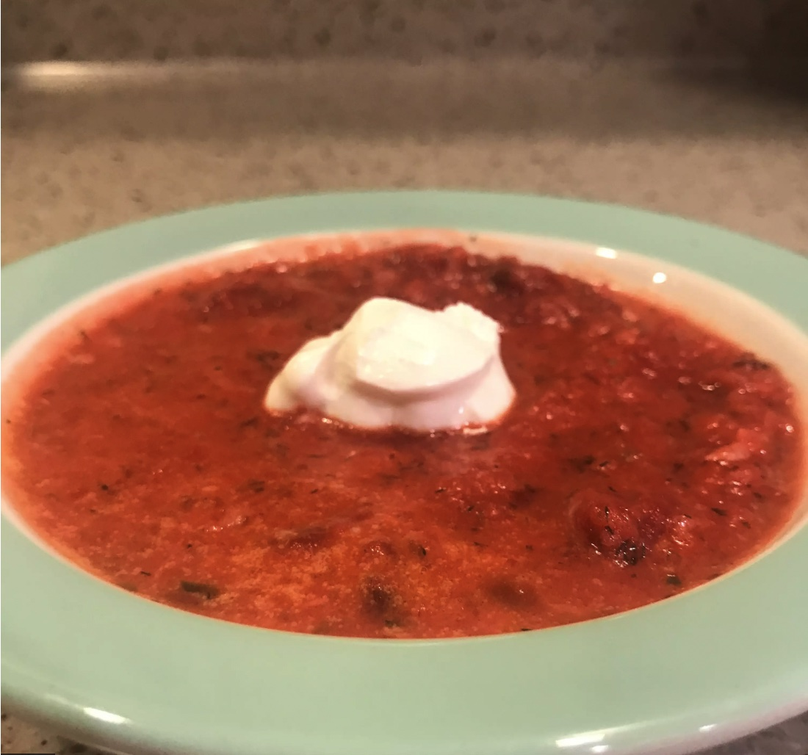

Borscht

Description
Borscht, also spelled borsch, borsht, or bortsch, beet soup of the Slavic countries. Although borscht is important in Russian and Polish cuisines, Ukraine is frequently cited as its place of origin. Its name is thought to be derived from the Slavic word for the cow parsnip, or common hogweed (Heracleum sphondylium), or from a fermented beverage derived from that plant. The more-palatable cultivated beet eventually replaced the wild cow parsnip as the basis of the soup.
Borschts are eaten hot or cold. Some are clear and light, others thick and substantial. Many recipes counterbalance the sweetness of the beets with the addition of kvass (also spelled kvas). The term kvass may refer to a sour, slightly alcoholic beer made from bread or to a concoction of fermented beets; both are used. Vinegar, lemon juice, or citric acid can be added to achieve a similar effect.
Ingredients
- 6 cups water
- ¾ tablespoon salt
- ½ cup finely chopped carrots
- ¼ cup chopped green bell pepper, divided
- ½ stalk celery, chopped
All ingredients
Steps
- Place water, salt, carrots, 1/2 of the bell pepper, celery, beet, tomatoes, and quartered potatoes in a large stock pot over high heat. Bring to a boil.
- Melt 1/3 cup butter in a separate skillet over medium heat. Saute onions in butter until tender, approximately 5 minutes. Stir in tomatoes, reduce heat to medium low, and simmer for 15 minutes. Remove 1/2 cup of sauce from skillet, and set aside. Stir half of the cabbage into the skillet with remaining sauce, and continue simmering 5 minutes more, or until tender.
- Remove beet from boiling liquid and discard. Remove potatoes with a slotted spoon or tongs, and place in a bowl with remaining 1 tablespoon of butter and the cream. Mash together until smooth.
- Return the 1/2 cup of reserved onion-tomato sauce to the stock pot. Stir in diced potatoes, and simmer until just tender but still firm, approximately 5 minutes. Increase heat to a low boil, and stir in remaining cabbage, tomato sauce, and mashed potatoes. Reduce heat and simmer a few minutes more. Stir in remaining bell pepper, season with black pepper, and serve.
back to home